<title>Umbral · La Cala Interior</title>
<link rel="preconnect" href="https://fonts.googleapis.com">
<link rel="stylesheet" href="https://fonts.googleapis.com/css2?family=Space+Grotesk:wght@400;500;600&family=JetBrains+Mono:wght@400;500&display=swap">
<style>
/* Lámina de dirección de arte, ronda 6. Las imágenes mandan; el prototipo es un plano vivo de las Gradas. Tema oscuro único, el de gevorah. */
:root{
  --night:#0e0c13; --ink:#15131d; --rule:#2a2738;
  --fg:#e9e6f2; --muted:#a3a7c2; --faint:#6f7290;
  --tide:#79c9b8; --glow:#5fe0ee; --warm:#efb68c; --amber:#ffb067; --mineral:#d6c3a0; --violet:#9aa6d8;
  --display:'Space Grotesk',ui-sans-serif,system-ui,sans-serif;
  --mono:'JetBrains Mono',ui-monospace,SFMono-Regular,Menlo,monospace;
  color-scheme:dark;
}
*{box-sizing:border-box}
body{background:var(--night);color:var(--fg);font:400 16px/1.6 var(--display);margin:0}
.wrap{max-width:1240px;margin:0 auto;padding-inline:clamp(16px,4vw,48px);padding-block:40px 96px;display:grid;gap:88px}
.eyebrow{font:500 12px/1 var(--mono);letter-spacing:.22em;text-transform:uppercase;color:var(--violet)}
h1{font:600 clamp(40px,7vw,84px)/.95 var(--display);letter-spacing:-.02em;margin:14px 0 0;text-wrap:balance}
h2{font:600 clamp(26px,3.4vw,38px)/1.1 var(--display);margin:8px 0 0;letter-spacing:-.01em;text-wrap:balance}
h3{font:600 17px/1.3 var(--display);margin:0;color:var(--fg)}
p{margin:0;color:var(--muted);max-width:66ch}
p strong{color:var(--fg);font-weight:500}
figure{margin:0}
img{display:block;max-width:100%;height:auto;border-radius:3px}
figcaption{font:400 12.5px/1.5 var(--mono);color:var(--faint);margin-top:10px;letter-spacing:.02em}
.head{display:grid;gap:22px}
.lede{font-size:clamp(17px,1.6vw,20px);line-height:1.55;color:var(--muted);max-width:62ch}
.status{display:inline-flex;gap:10px;align-items:center;font:500 12px var(--mono);color:var(--warm);letter-spacing:.08em;text-transform:uppercase}
.status::before{content:"";width:8px;height:8px;border-radius:50%;background:var(--warm)}
.sec{display:grid;gap:28px}
.sec-head{display:grid;gap:6px;border-top:1px solid var(--rule);padding-top:22px}
.cols{display:grid;grid-template-columns:repeat(auto-fit,minmax(min(100%,260px),1fr));gap:28px 36px}
.cols > div{display:grid;gap:8px;align-content:start}
.side{display:grid;grid-template-columns:minmax(0,2.2fr) minmax(0,1fr);gap:36px;align-items:start}
.notes{display:grid;gap:18px;align-content:start}
.notes > div{display:grid;gap:6px}

/* comparador de mareas */
.tide{position:relative;user-select:none;touch-action:pan-y;border-radius:3px;overflow:hidden;aspect-ratio:16/10;background:var(--ink)}
.tide img{position:absolute;inset:0;width:100%;height:100%;object-fit:cover;border-radius:0}
.tide .low{clip-path:inset(0 0 0 var(--cut,50%))}
.tide .bar{position:absolute;top:0;bottom:0;left:var(--cut,50%);width:2px;margin-left:-1px;background:var(--fg)}
.tide .knob{position:absolute;top:50%;left:var(--cut,50%);transform:translate(-50%,-50%);width:44px;height:44px;border-radius:50%;background:var(--night);border:2px solid var(--fg);display:grid;place-items:center;font:500 13px var(--mono)}
.tide .tag{position:absolute;top:14px;font:500 11.5px var(--mono);letter-spacing:.16em;text-transform:uppercase;padding:6px 10px;background:rgba(14,12,19,.62);border-radius:2px}
.tide .tag.l{left:14px} .tide .tag.r{right:14px;color:var(--tide)}
.tide input{position:absolute;inset:0;width:100%;height:100%;opacity:0;cursor:ew-resize;margin:0}
.tide:focus-within .knob{outline:2px solid var(--tide);outline-offset:3px}
.btns{display:flex;gap:8px;flex-wrap:wrap}
.btns button{font:500 12px var(--mono);letter-spacing:.12em;text-transform:uppercase;background:transparent;color:var(--muted);border:1px solid var(--rule);border-radius:2px;padding:9px 14px;cursor:pointer}
.btns button:hover,.btns button:focus-visible{color:var(--fg);border-color:var(--muted);outline:none}
.btns button[aria-pressed="true"]{color:var(--night);background:var(--fg);border-color:var(--fg)}

/* organismos */
.org{display:grid;grid-template-columns:repeat(auto-fit,minmax(min(100%,250px),1fr));gap:0;border-top:1px solid var(--rule)}
.org > div{padding:18px 20px 20px 0;border-bottom:1px solid var(--rule);display:grid;gap:8px;align-content:start}
.dot{width:10px;height:10px;border-radius:50%;display:inline-block;margin-right:10px;vertical-align:1px}

/* tres estados de marea */
.states{display:grid;grid-template-columns:repeat(3,minmax(0,1fr));gap:0;border-top:1px solid var(--rule)}
.states > div{padding:16px 20px 18px 0;display:grid;gap:8px;align-content:start;border-bottom:1px solid var(--rule)}
.states .lvl{font:500 12px var(--mono);letter-spacing:.1em;color:var(--tide);text-transform:uppercase}

/* secuencia */
.seq{display:grid;grid-template-columns:repeat(auto-fit,minmax(min(100%,340px),1fr));gap:28px}
.seq figure{display:grid;gap:10px;align-content:start}
.seq .n{font:500 12px var(--mono);color:var(--glow);letter-spacing:.12em}
.seq h3{font-size:16px}
.seq p{font-size:15px}

/* prototipo */
.proto{display:grid;grid-template-columns:minmax(0,1.9fr) minmax(0,1fr);gap:28px;align-items:start}
.stage{position:relative;background:var(--ink);border-radius:3px;overflow:hidden;aspect-ratio:16/11}
.stage canvas{display:block;width:100%;height:100%;cursor:crosshair}
.hint{position:absolute;left:14px;bottom:12px;font:400 12px var(--mono);color:var(--faint);pointer-events:none}
.log{display:grid;gap:14px;align-content:start}
.log ol{list-style:none;margin:0;padding:0;display:grid;gap:10px;counter-reset:d}
.log li{display:grid;grid-template-columns:22px minmax(0,1fr);gap:10px;color:var(--faint);font-size:15px;line-height:1.45}
.log li::before{counter-increment:d;content:counter(d);font:500 12px var(--mono);color:var(--faint);padding-top:2px}
.log li.got{color:var(--fg)} .log li.got::before{color:var(--glow)}
.log .q{font-style:normal;color:var(--faint)}
.log .count{font:500 12px var(--mono);letter-spacing:.12em;text-transform:uppercase;color:var(--muted)}
.msg{min-height:3.2em;font-size:15px;color:var(--muted);border-left:2px solid var(--rule);padding-left:12px}
.open{display:grid;gap:10px}
.open li{color:var(--muted);max-width:70ch}
@media (max-width:860px){ .side,.proto{grid-template-columns:minmax(0,1fr)} .states{grid-template-columns:minmax(0,1fr)} }
@media (prefers-reduced-motion:no-preference){ .tide img.low{transition:clip-path .45s cubic-bezier(.3,.7,.2,1)} .tide .bar,.tide .knob{transition:left .45s cubic-bezier(.3,.7,.2,1)} .tide.drag img.low,.tide.drag .bar,.tide.drag .knob{transition:none} }
</style>

<main class="wrap">
  <header class="head">
    <span class="eyebrow">Gevorah · Small Worlds · Umbral · Ronda 6</span>
    <h1>La Cala Interior</h1>
    <p class="lede">Refinamiento de La Rompiente y diseño del lugar que se descubre debajo. La geografía es la misma de la ronda anterior: la isla, el alero, la rasa, la cueva y el túnel no se han movido. Lo nuevo vive dentro de ellos.</p>
    <span class="status">Para evaluación · dirección no aprobada</span>
  </header>

  <section class="sec" id="orbita">
    <div class="sec-head"><span class="eyebrow">I · Vista orbital refinada</span><h2>El arco de bajíos, con fondo y con relieve</h2></div>
    <figure>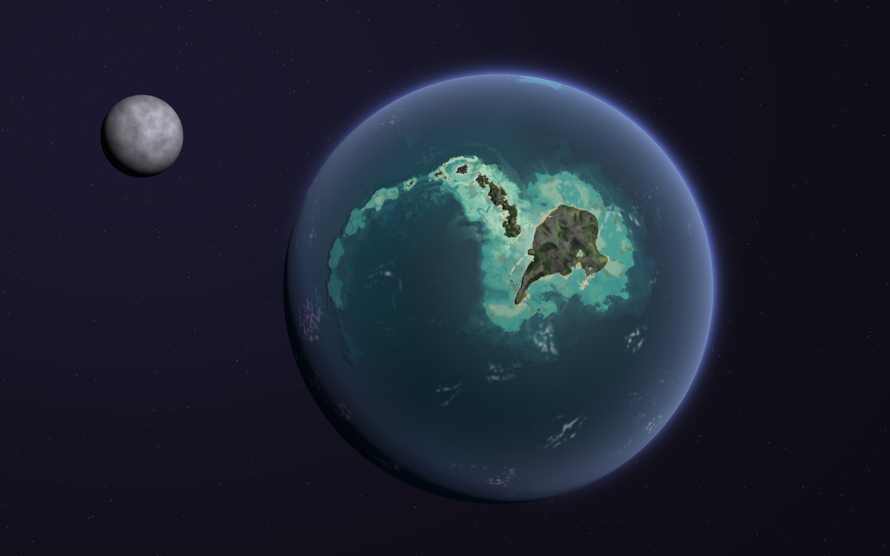</figure>
    <div class="side">
      <div class="notes" id="orbita-notas">
        <div><h3>Lo que cambia</h3><p>El turquesa ya no es una mancha: sale de una batimetría continua, con un talud oscuro en el lado exterior del arco y una pendiente suave en el interior. Las masas tienen jerarquía (una gran plataforma alrededor de la isla principal, islas medianas con sus arrecifes, una isla con arrecife barrera y laguna, y una cola de islotes y bancos ahogados) y las plataformas están surcadas por canales de marea y bancos de arena alineados con la corriente. Las islas tienen relieve propio.</p></div>
        <div><h3>Lo que se conserva</h3><p>La curva del arco con la isla en su cabeza, el océano petróleo, la luna que levanta las mareas y la lectura a escala pequeña.</p></div>
      </div>
      <figure class="notes">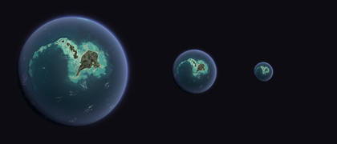<figcaption>Prueba de lectura a 160, 64 y 28 px.</figcaption></figure>
    </div>
  </section>

  <section class="sec" id="mareas">
    <div class="sec-head"><span class="eyebrow">II · Pleamar y bajamar</span><h2>La misma composición, otra geología</h2></div>
    <div class="btns" role="group" aria-label="Estado de la marea">
      <button type="button" data-cut="100" aria-pressed="false">Pleamar · 0 m</button>
      <button type="button" data-cut="50" aria-pressed="true">Comparar</button>
      <button type="button" data-cut="0" aria-pressed="false">Bajamar · −24 m</button>
    </div>
    <div class="tide" id="tide" style="--cut:50%">
      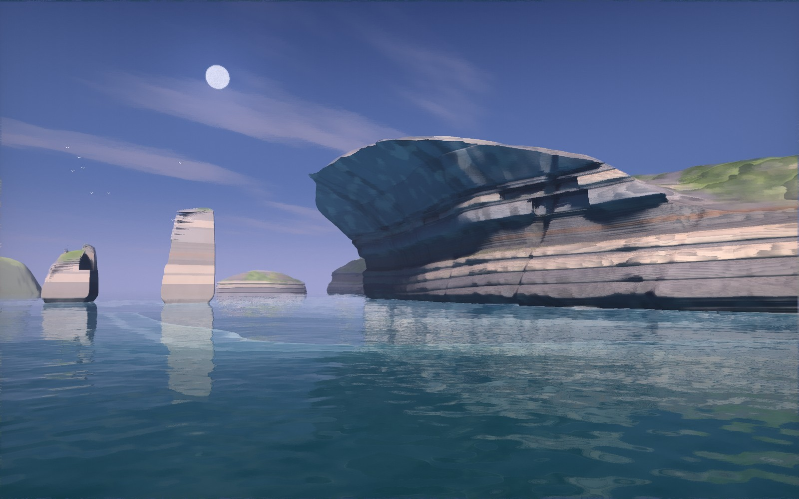
      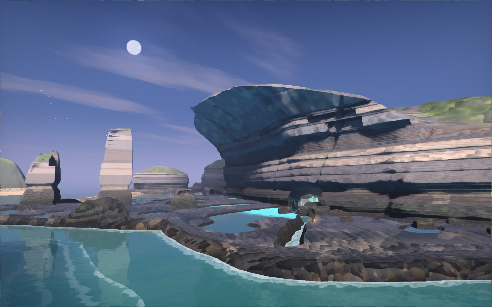
      <span class="tag l">Pleamar</span><span class="tag r">Bajamar</span>
      <div class="bar"></div><div class="knob" aria-hidden="true">⇆</div>
      <input id="cut" type="range" min="0" max="100" value="50" aria-label="Deslizar entre pleamar y bajamar">
    </div>
    <div class="cols">
      <div><h3>Estratos</h3><p>Una columna estratigráfica escrita a mano en lugar de una repetición: paquetes finos abajo, un banco duro cuyo techo es la rasa, cornisas, una cintura blanda que deja una sombra horizontal y un remate masivo. Los bancos se acuñan a lo largo de la costa. Solo unos pocos bancos guía cambian de color.</p></div>
      <div><h3>El techo del alero</h3><p>Ya no es una superficie lisa: es una pila de losas en voladizo, cada una nacida de su propia base, con cicatrices donde una losa cayó entre dos diaclasas y costras de sal en la sombra. Los bloques caídos están al pie.</p></div>
      <div><h3>Farallones</h3><p>Los cortan las mismas dos familias de diaclasas que a la pared, por eso son prismas y no columnas apiladas. Cuentan la secuencia de la erosión: el más lejano conserva un arco en la base, el alto es un farallón abierto por una grieta y el tercero es un tocón que solo asoma en bajamar. Las cornisas se marcan en la cara que mira al mar; las otras caras son planos de diaclasa.</p></div>
      <div><h3>Jerarquía en bajamar</h3><p>La rasa se calma: una gama estrecha, superficies mojadas que reflejan el cielo y pocas pozas grandes. El canal conduce la mirada a la boca de la cueva, y al fondo del túnel aparece una luz cálida que no debería estar ahí: es el sol de La Cala Interior.</p></div>
    </div>
  </section>

  <section class="sec" id="cala">
    <div class="sec-head"><span class="eyebrow">III · La Cala Interior</span><h2>Las Gradas: un anfiteatro de gours bajo un jameo</h2></div>
    <figure></figure>
    <div class="side">
      <div class="notes">
        <div><h3>El lugar</h3><p>El túnel que nace en la Bóveda, bajo el alero, atraviesa el brazo de la isla. A mitad de camino el techo se hundió hace mucho y abrió un <strong>jameo</strong>: una sala de unos 80 m con un tragaluz al cielo. Por él entra el sol de la tarde, que cruza la sala en diagonal y cae sobre las gradas altas.</p></div>
        <div><h3>Lo que la hace memorable</h3><p>Desde la poza madre, a nivel de bajamar, sube una escalera de <strong>gours</strong>: pozas escalonadas con bordes minerales lobulados, como coladas de cal que se desbordan unas sobre otras. Ocupan exactamente los 24 m de la marea y las alimenta desde arriba un manantial de agua dulce de la isla. Abajo, en la sombra, el agua salada de la marea guarda luz propia. Arriba, al sol, el agua dulce cría algas doradas. El lugar tiene dos luces y dos aguas, y la frontera entre ellas se puede ver.</p></div>
        <div><h3>Materiales y luz</h3><p>Basalto oscuro con los mismos bancos que La Rompiente, travertino crema en los labios y ocre mojado en las cortinas. Tres luces sin lámparas: el haz cálido del jameo, el cielo frío que baja por el mismo hueco y el turquesa de la deriva en las orillas saladas.</p></div>
      </div>
      <figure class="notes">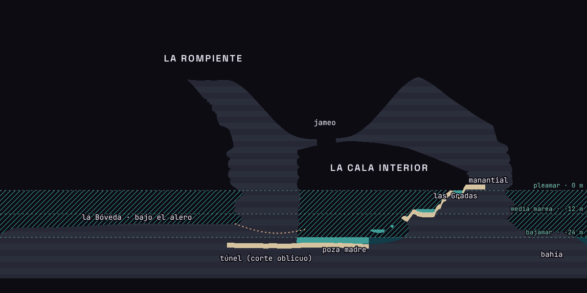<figcaption>Corte a z = 404 m medido sobre los dos volúmenes del lugar. La sala está detrás de la cara de La Rompiente; la marea entra por el túnel desde la Bóveda.</figcaption></figure>
    </div>

    <div class="org">
      <div><h3><span class="dot" style="background:var(--mineral)"></span>Constructoras</h3><p>Una costra viva, crema y rosada, que fija la cal del agua. Crece donde el agua rebosa: los bordes de las pozas son su obra, y se mueven con la corriente.</p></div>
      <div><h3><span class="dot" style="background:var(--glow)"></span>Deriva</h3><p>Plancton que solo vive en agua salada y destella cuando el agua se agita. Viaja con la corriente y se acumula en la poza madre durante la bajamar.</p></div>
      <div><h3><span class="dot" style="background:var(--amber)"></span>Farolillos</h3><p>Anémonas translúcidas en el labio de cada rebosadero. Comen la deriva que el agua les trae y, al hacerlo, se encienden en ámbar. Si su rebosadero se seca, se cierran.</p></div>
      <div><h3><span class="dot" style="background:#b8b24f"></span>Algas de luz</h3><p>Una película dorada en las pozas altas, dulces y al sol. Marcan dónde acaba el mar: por encima de ellas la deriva no sobrevive.</p></div>
    </div>

    <div class="states">
      <div><span class="lvl">Pleamar · 0 m</span><h3>Una laguna</h3><p>El mar llena la sala hasta las dos últimas filas. Todo está conectado y la deriva se dispersa. El túnel está sumergido: solo se llega a nado o se mira desde el borde del jameo, arriba en la isla.</p></div>
      <div><span class="lvl">Media marea · −12 m</span><h3>Una orilla que baja</h3><p>Las filas altas emergen y quedan aisladas con su agua. La cascada empieza a correr sobre ellas y desemboca en la laguna, donde la luz de la deriva se abre en círculo.</p></div>
      <div><span class="lvl">Bajamar · −24 m</span><h3>Una escalera de pozas</h3><p>Las gradas están enteras. El manantial corre de fila en fila hasta la poza madre. Es el único momento en que se puede entrar caminando y el único en que el agua dibuja un camino.</p></div>
    </div>
  </section>

  <section class="sec" id="secuencia">
    <div class="sec-head"><span class="eyebrow">IV · Secuencia</span><h2>Qué descubre quien remueve el agua</h2></div>
    <p>La interacción tiene tres verbos: <strong>remover</strong> una poza, <strong>desviar</strong> un rebosadero con una piedra y <strong>esperar</strong> a la marea. No hay interruptores. La luz es la consecuencia visible de una relación: dónde hay sal, hacia dónde va el agua y quién come de ella.</p>
    <div class="seq">
      <figure>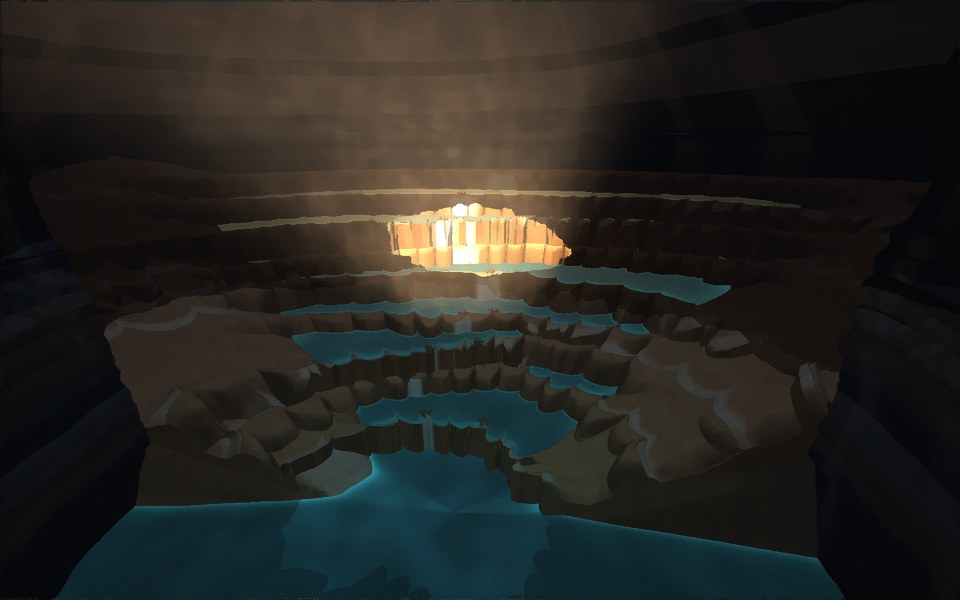<span class="n">1 · LLEGAR</span><h3>En reposo</h3><p>Bajamar. Las orillas saladas tienen un rumor azul; los farolillos están apagados. El agua del manantial corre por un único camino.</p></figure>
      <figure>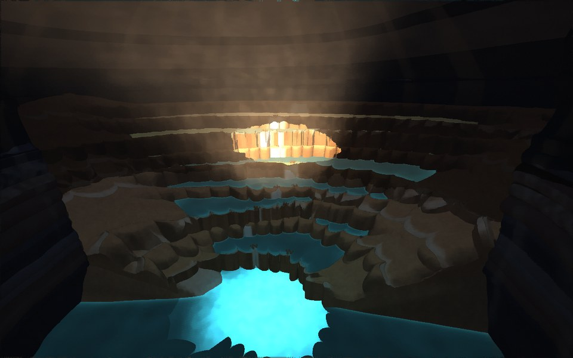<span class="n">2 · REMOVER ABAJO</span><h3>La luz se queda</h3><p>Remover la poza madre la ilumina entera, y la luz no se mueve. El agua quieta no lleva la luz a ninguna parte.</p></figure>
      <figure>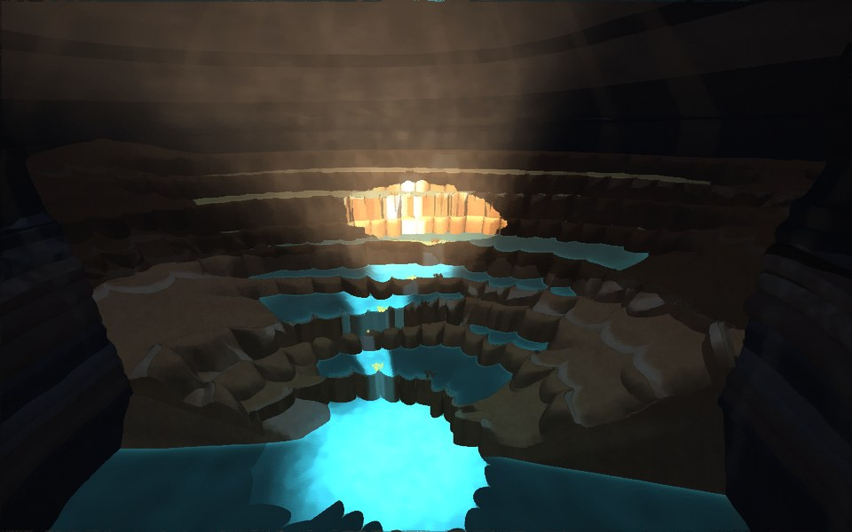<span class="n">3 · REMOVER ARRIBA</span><h3>La luz baja con el agua</h3><p>Remover una poza de la cuarta fila suelta un río de luz que baja de rebosadero en rebosadero por la rama norte. A su paso, los farolillos se encienden en ámbar: comen.</p></figure>
      <figure>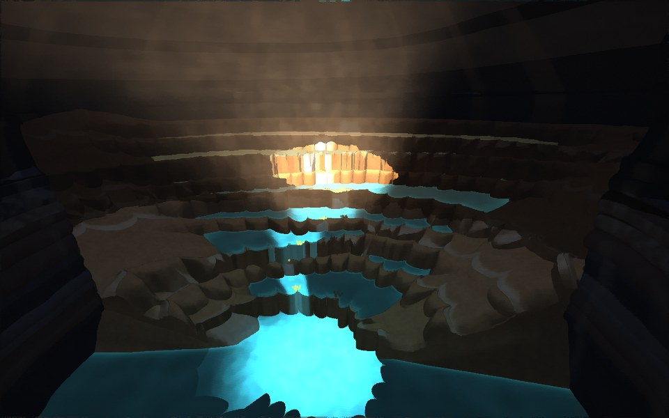<span class="n">4 · MÁS ARRIBA</span><h3>Donde acaba el mar</h3><p>En las pozas altas, dulces y al sol, remover no enciende nada. La luz aparece unas filas más abajo, justo donde empieza el agua salada. La frontera se ve.</p></figure>
      <figure>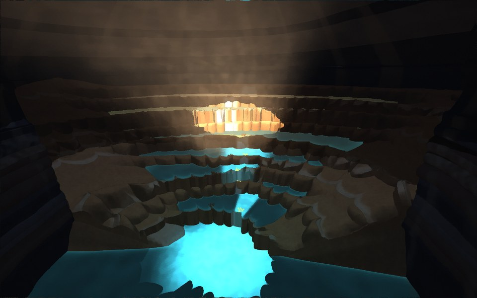<span class="n">5 · DESVIAR</span><h3>Una piedra cambia quién come</h3><p>Una piedra en el rebosadero de la horquilla manda el agua por la rama sur. Ahora comen los farolillos del sur y los del norte se cierran. Así se construyeron las gradas: crecen donde cae el agua. Desde este ángulo el cambio de rama apenas se distingue del fotograma 3; en el prototipo se ve claro.</p></figure>
      <figure>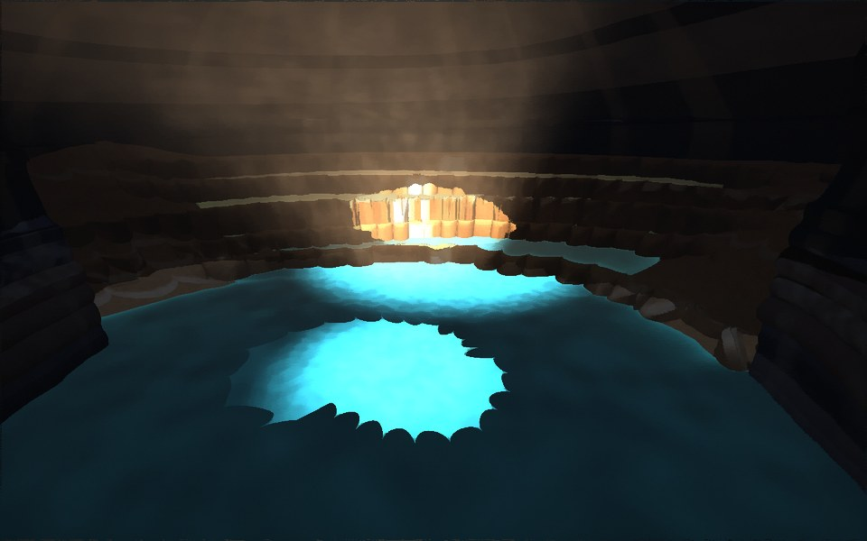<span class="n">6 · ESPERAR</span><h3>La marea lo une todo</h3><p>Vuelve el mar por el túnel. Las filas bajas se funden en una laguna y la luz de un rebosadero se abre en círculo sobre ella. Es también el aviso de que el túnel se cierra: hay que salir.</p></figure>
    </div>
  </section>

  <section class="sec" id="prototipo">
    <div class="sec-head"><span class="eyebrow">V · Prototipo de la interacción</span><h2>Las Gradas en planta</h2></div>
    <p>Un plano vivo para probar la idea, no una implementación. Toca una poza para removerla, toca la piedra para moverla y cambia la marea. El cuaderno registra lo que se entiende, como el diario de a bordo de Outer Wilds.</p>
    <div class="proto">
      <div class="notes">
        <div class="stage"><canvas id="gradas" width="1100" height="756" aria-label="Plano interactivo de las Gradas: pozas escalonadas, la cascada, la piedra y los farolillos"></canvas><span class="hint">Remueve una poza · mueve la piedra</span></div>
        <div class="btns" role="group" aria-label="Marea en la cala" id="tides">
          <button type="button" data-l="-24" aria-pressed="true">Bajamar</button>
          <button type="button" data-l="-12" aria-pressed="false">Media marea</button>
          <button type="button" data-l="0" aria-pressed="false">Pleamar</button>
        </div>
      </div>
      <div class="log">
        <span class="count" id="count">Cuaderno · 0 de 5</span>
        <p class="msg" id="msg">Bajamar. El agua del manantial baja por la rama norte.</p>
        <ol id="cuaderno">
          <li data-k="flow"><span class="q">¿Qué hace la luz cuando el agua corre?</span></li>
          <li data-k="fresh"><span class="q">¿Por qué arriba no se enciende nada?</span></li>
          <li data-k="feed"><span class="q">¿Por qué se encienden las anémonas?</span></li>
          <li data-k="stone"><span class="q">¿Qué pasa si el agua cambia de camino?</span></li>
          <li data-k="tide"><span class="q">¿Qué cambia cuando vuelve el mar?</span></li>
        </ol>
      </div>
    </div>
  </section>

  <section class="sec">
    <div class="sec-head"><span class="eyebrow">Puntos abiertos</span></div>
    <ul class="open">
      <li>En la órbita, la plataforma de cabecera sigue siendo una mancha clara grande con algunos bajíos a manchas; su borde ya se lee como talud, pero no tanto su interior. La isla con arrecife barrera queda pequeña arriba del disco.</li>
      <li>El farallón alto todavía alterna bandas claras y oscuras demasiado regulares; necesita perder un tramo de cornisa y ganar un bloque caído al pie.</li>
      <li>Las gradas aún se leen algo regulares en el centro del anfiteatro; necesitan pozas rotas, un par de filas fundidas y bloques caídos del techo.</li>
      <li>La luminiscencia se usa en tres sitios (las pozas de la Bóveda, la boca de la cueva y la cala). Conviene decidir si fuera debe desaparecer y quedarse solo como la recompensa interior.</li>
      <li>La figura con farol da la escala en la cala, pero desde el fondo de la sala las gradas altas siguen pareciendo más pequeñas de lo que son (3 m por salto).</li>
      <li>El prototipo simplifica la red a dos ramas. El diseño definitivo necesita al menos una segunda horquilla para que desviar el agua tenga más de una respuesta.</li>
    </ul>
  </section>
</main>

<script>
// comparador
(() => {
  const box = document.getElementById('tide'), range = document.getElementById('cut');
  const btns = [...document.querySelectorAll('#mareas .btns button')];
  const set = v => { box.style.setProperty('--cut', v + '%'); range.value = v; btns.forEach(b => b.setAttribute('aria-pressed', String(+b.dataset.cut === +v))); };
  range.addEventListener('pointerdown', () => box.classList.add('drag'));
  window.addEventListener('pointerup', () => box.classList.remove('drag'));
  range.addEventListener('input', () => set(range.value));
  btns.forEach(b => b.addEventListener('click', () => set(b.dataset.cut)));
})();

// prototipo de las Gradas: mismas filas, cotas y caminos que cala.frag
(() => {
  const cv = document.getElementById('gradas'), g = cv.getContext('2d');
  const W = cv.width, H = cv.height;
  const RR = [12.0, 19.5, 23.5, 30.0, 33.5, 40.0, 44.5, 49.5, 56.0];
  const HB = [-20.4, -18.2, -15.2, -13.4, -10.0, -7.4, -3.4, -0.4, 2.6];
  const RIM = 0.55, NR = 8, SALT = 4.5, FORK = 4;
  const S = 9.0, CX = W * 0.5, CY = H * 0.965;          // escala y centro (la poza madre abajo)
  const SPAN = 1.18;
  let L = -24, stone = false, pulses = [], fed = {}, found = new Set();
  const rnd = (a, b) => { const s = Math.sin(a * 127.1 + b * 311.7) * 43758.5453; return s - Math.floor(s); };
  const pathA = i => 0.12 * Math.sin(i * 1.3) + 0.05 + (i < 4 ? -0.34 * (4 - i) / 4 : 0);
  const pathB = i => 0.12 * Math.sin(i * 1.3) + 0.05 + (i < 4 ? 0.40 * (4 - i) / 4 : 0);
  const active = () => stone ? 0 : 1;
  const pathAng = (i, br) => br ? pathB(i) : pathA(i);
  function rimR(a, i) {
    const n = RR[i] / (2.6 + 2.4 * rnd(i, 7));
    const x = a * n + rnd(i, 3), cell = Math.floor(x), f = (x - cell) * 2 - 1;
    const amp = 0.5 + 1.7 * rnd(cell, i + 11);
    return RR[i] - amp * Math.sqrt(Math.max(1 - f * f, 0)) + 2.6 * Math.sin(a * (1.3 + 0.4 * rnd(i, 9)) + i * 1.7);
  }
  const P = (a, r) => [CX + Math.sin(a) * r * S, CY - Math.cos(a) * r * S];   // a = 0 apunta arriba (al manantial)
  const submerged = i => i < 0 ? L > -24.5 : HB[i] + RIM < L;
  const salty = i => i < SALT;
  function rowAt(x, y) {
    const dx = (x - CX) / S, dy = (CY - y) / S, r = Math.hypot(dx, dy), a = Math.atan2(dx, dy);
    if (Math.abs(a) > SPAN) return null;
    let row = -1;
    for (let k = 0; k < NR; k++) if (r >= rimR(a, k)) row = k;
    if (r > RR[8] + 2) return null;
    return { row, a, r };
  }
  function notch(i, br) { const a = pathAng(i, br); return P(a, rimR(a, i) + 0.2); }
  function lanterns() {
    const out = [];
    for (let i = 0; i < NR; i++) for (let br = 0; br < 2; br++) { if (i >= FORK && br === 1) continue; out.push({ i, br: i >= FORK ? -1 : br, p: notch(i, br) }); }
    return out;
  }
  // un pulso recorre filas hacia abajo por el camino activo; en agua dulce no hay luz
  function stir(x, y) {
    const hit = rowAt(x, y); if (!hit) return;
    const { row } = hit;
    if (row >= 0 && submerged(row) || row < 0) {
      if (L > -24.5) { pulses.push({ kind: 'ring', x, y, t: 0 }); say('La luz se abre en la laguna y se apaga despacio: aquí todo está conectado.'); if (pulses.length) learn('tide'); return; }
      pulses.push({ kind: 'still', x, y, t: 0 });
      say('La poza madre se ilumina entera y la luz se queda: el agua quieta no la lleva a ninguna parte.');
      return;
    }
    if (!salty(row)) {
      pulses.push({ kind: 'dud', x, y, t: 0 });
      say('Agua dulce del manantial: remover no enciende nada. Algas doradas, ninguna deriva.');
      learn('fresh');
      pulses.push({ kind: 'flow', from: row, br: active(), t: 0, silentAbove: SALT });
      return;
    }
    pulses.push({ kind: 'flow', from: row, br: active(), t: 0, x, y });
    say(stone ? 'La luz baja por la rama sur: la piedra ha cambiado el camino del agua.' : 'La luz baja con el agua, de rebosadero en rebosadero.');
  }
  function learn(k) {
    if (found.has(k)) return; found.add(k);
    const li = document.querySelector(`#cuaderno li[data-k="${k}"]`);
    const txt = { flow: 'La luz baja con el agua: revela qué pozas están conectadas.', fresh: 'Arriba el agua es dulce. La deriva solo vive donde llega el mar.', feed: 'Los farolillos se encienden al comer la deriva que trae la corriente.', stone: 'Una piedra cambia quién come: el agua decide dónde vive cada cosa.', tide: 'Con la marea alta todo se une en una laguna, y el túnel se cierra.' }[k];
    li.classList.add('got'); li.textContent = txt;
    document.getElementById('count').textContent = `Cuaderno · ${found.size} de 5`;
  }
  const say = t => { document.getElementById('msg').textContent = t; };

  // dibujo
  function poolPath(i) {
    g.beginPath();
    const steps = 90;
    for (let s = 0; s <= steps; s++) { const a = -SPAN + 2 * SPAN * s / steps; const [x, y] = P(a, rimR(a, i)); s ? g.lineTo(x, y) : g.moveTo(x, y); }
    for (let s = steps; s >= 0; s--) { const a = -SPAN + 2 * SPAN * s / steps; const [x, y] = P(a, i + 1 < NR ? rimR(a, i + 1) : RR[8]); g.lineTo(x, y); }
    g.closePath();
  }
  function rimPath(i) {
    g.beginPath();
    for (let s = 0; s <= 120; s++) { const a = -SPAN + 2 * SPAN * s / 120; const [x, y] = P(a, rimR(a, i)); s ? g.lineTo(x, y) : g.moveTo(x, y); }
  }
  function draw(ts) {
    g.clearRect(0, 0, W, H);
    g.fillStyle = '#15131d'; g.fillRect(0, 0, W, H);
    // la sala y el túnel
    g.fillStyle = '#1d1b27';
    g.beginPath(); g.ellipse(CX, CY - RR[8] * S * 0.5, RR[8] * S * 1.0, RR[8] * S * 0.62, 0, 0, Math.PI * 2); g.fill();
    g.fillStyle = '#1d1b27'; g.beginPath(); g.moveTo(CX - 60, CY + 60); g.lineTo(CX - 210, H + 10); g.lineTo(CX - 90, H + 10); g.lineTo(CX + 20, CY + 30); g.fill();
    // charco de sol sobre las gradas altas
    const sp = P(0.15, 46);
    const sg = g.createRadialGradient(sp[0], sp[1], 10, sp[0], sp[1], 170);
    sg.addColorStop(0, 'rgba(239,182,140,.28)'); sg.addColorStop(1, 'rgba(239,182,140,0)');
    // pozas
    for (let i = NR - 1; i >= 0; i--) {
      poolPath(i);
      const sub = submerged(i);
      g.fillStyle = sub ? '#123c48' : (salty(i) ? '#1f5866' : '#4f5a35');
      g.fill();
    }
    // poza madre / laguna
    g.beginPath();
    for (let s = 0; s <= 90; s++) { const a = -SPAN + 2 * SPAN * s / 90; const [x, y] = P(a, rimR(a, 0)); s ? g.lineTo(x, y) : g.moveTo(x, y); }
    g.lineTo(CX + 30, CY + 40); g.lineTo(CX - 60, CY + 50); g.closePath(); g.fillStyle = '#123c48'; g.fill();
    g.fillStyle = sg; g.fillRect(0, 0, W, H);
    // bordes minerales
    for (let i = 0; i < NR; i++) { rimPath(i); g.strokeStyle = submerged(i) ? 'rgba(214,195,160,.25)' : '#d6c3a0'; g.lineWidth = submerged(i) ? 1.2 : 2.4; g.stroke(); }
    // línea de sal
    g.save(); g.setLineDash([3, 6]); g.strokeStyle = 'rgba(184,178,79,.7)'; g.lineWidth = 1;
    g.beginPath(); for (let s = 0; s <= 80; s++) { const a = -SPAN + 2 * SPAN * s / 80; const [x, y] = P(a, rimR(a, 5) - 0.7); s ? g.lineTo(x, y) : g.moveTo(x, y); } g.stroke(); g.restore();
    const [lx, ly] = P(SPAN, rimR(SPAN, 5) - 0.7); g.fillStyle = 'rgba(184,178,79,.95)'; g.font = '500 15px "JetBrains Mono", monospace'; g.fillText('línea de sal', lx + 12, ly + 4);
    const [mx, my] = P(0, 6); g.fillStyle = 'rgba(233,230,242,.75)'; g.textAlign = 'center'; g.fillText('poza madre', mx, my); g.textAlign = 'left';
    // cascada activa
    const br = active();
    g.strokeStyle = 'rgba(233,230,242,.85)'; g.lineWidth = 2;
    g.beginPath();
    const top = P(pathAng(NR - 1, 1), RR[8] + 1.5); g.moveTo(top[0], top[1]);
    for (let i = NR - 1; i >= 0; i--) { if (submerged(i)) break; const [x, y] = notch(i, i >= FORK ? 1 : br); g.lineTo(x, y); }
    g.stroke();
    // manantial
    g.fillStyle = '#e9e6f2'; g.beginPath(); g.arc(top[0], top[1], 4, 0, 7); g.fill();
    g.fillStyle = 'rgba(233,230,242,.8)'; g.fillText('manantial', top[0] + 10, top[1] + 4);
    // pulsos
    const now = ts / 1000;
    pulses = pulses.filter(p => p.t < 6);
    for (const p of pulses) {
      p.t += 1 / 60;
      if (p.kind === 'still' || p.kind === 'ring') {
        const rad = p.kind === 'still' ? Math.min(p.t * 160, 120) : p.t * 70;
        const alpha = p.kind === 'still' ? Math.max(0, 1 - p.t / 5) : Math.max(0, 1 - p.t / 3);
        const gg = g.createRadialGradient(p.x, p.y, 0, p.x, p.y, rad);
        gg.addColorStop(0, `rgba(95,224,238,${0.55 * alpha})`); gg.addColorStop(1, 'rgba(95,224,238,0)');
        g.fillStyle = gg; g.fillRect(p.x - rad, p.y - rad, rad * 2, rad * 2);
      } else if (p.kind === 'dud') {
        g.strokeStyle = `rgba(233,230,242,${Math.max(0, 0.6 - p.t)})`; g.lineWidth = 1;
        g.beginPath(); g.arc(p.x, p.y, 6 + p.t * 40, 0, 7); g.stroke();
      } else if (p.kind === 'flow') {
        const speed = 2.2;                                   // filas por segundo
        const head = p.from - p.t * speed;
        for (let i = p.from; i >= -1; i--) {
          if (i < head - 0.001) break;
          if (i >= SALT || (p.silentAbove && i >= p.silentAbove)) continue;
          const age = (p.from - i) / speed;
          const alpha = Math.max(0, 1 - (p.t - age) / 3.5);
          if (i >= 0 && submerged(i) || i < 0) {
            // entra en la laguna o en la poza madre
            const [ex, ey] = notch(Math.max(i + 1, 0), Math.max(i + 1, 0) >= FORK ? 1 : p.br);
            const rad = Math.min((p.t - age) * 90, L > -24.5 ? 200 : 110);
            const gg = g.createRadialGradient(ex, ey, 0, ex, ey, rad);
            gg.addColorStop(0, `rgba(95,224,238,${0.5 * alpha})`); gg.addColorStop(1, 'rgba(95,224,238,0)');
            g.fillStyle = gg; g.fillRect(ex - rad, ey - rad, rad * 2, rad * 2);
            if (L > -24.5) learn('tide');
            break;
          }
          const [x, y] = notch(i, i >= FORK ? 1 : p.br);
          const gg = g.createRadialGradient(x, y, 0, x, y, 46);
          gg.addColorStop(0, `rgba(95,224,238,${0.85 * alpha})`); gg.addColorStop(1, 'rgba(95,224,238,0)');
          g.fillStyle = gg; g.fillRect(x - 46, y - 46, 92, 92);
          fed[`${i}:${i >= FORK ? -1 : p.br}`] = now;
          if (p.from - i >= 2) learn('flow');
          learn('feed');
          if (stone && i < FORK) learn('stone');
        }
      }
    }
    // farolillos
    for (const l of lanterns()) {
      if (submerged(l.i)) continue;
      const key = `${l.i}:${l.br}`;
      const dry = l.br !== -1 && l.br !== br;
      const glow = fed[key] ? Math.max(0, 1 - (now - fed[key]) / 4) : 0;
      const [x, y] = l.p;
      if (glow > 0.01) { const gg = g.createRadialGradient(x, y, 0, x, y, 26); gg.addColorStop(0, `rgba(255,176,103,${0.8 * glow})`); gg.addColorStop(1, 'rgba(255,176,103,0)'); g.fillStyle = gg; g.fillRect(x - 26, y - 26, 52, 52); }
      g.fillStyle = dry ? '#5a4a3c' : (glow > 0.01 ? '#ffd2a0' : '#b8753e');
      for (let m = 0; m < 4; m++) { g.beginPath(); g.arc(x + Math.cos(m * 2.4 + l.i) * 4, y + Math.sin(m * 2.4 + l.i) * 4, dry ? 2.2 : 3, 0, 7); g.fill(); }
    }
    // la piedra, en el rebosadero norte de la horquilla
    const [sx, sy] = stone ? notch(FORK - 1, 1) : P(pathB(FORK - 1) + 0.2, rimR(pathB(FORK - 1) + 0.2, FORK - 1) - 1.6);
    g.fillStyle = '#9a9eab'; g.beginPath(); g.ellipse(sx, sy, 11, 8, 0.4, 0, 7); g.fill();
    g.strokeStyle = '#0e0c13'; g.lineWidth = 1.5; g.stroke();
    stoneHit = [sx, sy];
    requestAnimationFrame(draw);
  }
  let stoneHit = [0, 0];
  function toCanvas(e) { const r = cv.getBoundingClientRect(); return [(e.clientX - r.left) * W / r.width, (e.clientY - r.top) * H / r.height]; }
  cv.addEventListener('pointerdown', e => {
    const [x, y] = toCanvas(e);
    if (Math.hypot(x - stoneHit[0], y - stoneHit[1]) < 15) {
      stone = !stone;
      say(stone ? 'La piedra tapa el rebosadero norte de la horquilla. El agua busca el camino del sur.' : 'Sin la piedra, el agua vuelve a bajar por la rama norte.');
      return;
    }
    stir(x, y);
  });
  document.querySelectorAll('#tides button').forEach(b => b.addEventListener('click', () => {
    L = +b.dataset.l;
    document.querySelectorAll('#tides button').forEach(x => x.setAttribute('aria-pressed', String(x === b)));
    say({ '-24': 'Bajamar. Las gradas están enteras y el manantial corre por ellas.', '-12': 'Media marea. Las filas bajas son ya una laguna conectada con el mar.', '0': 'Pleamar. La sala es una laguna; solo las dos últimas filas siguen fuera del agua.' }[b.dataset.l]);
  }));
  requestAnimationFrame(draw);
})();
</script>
